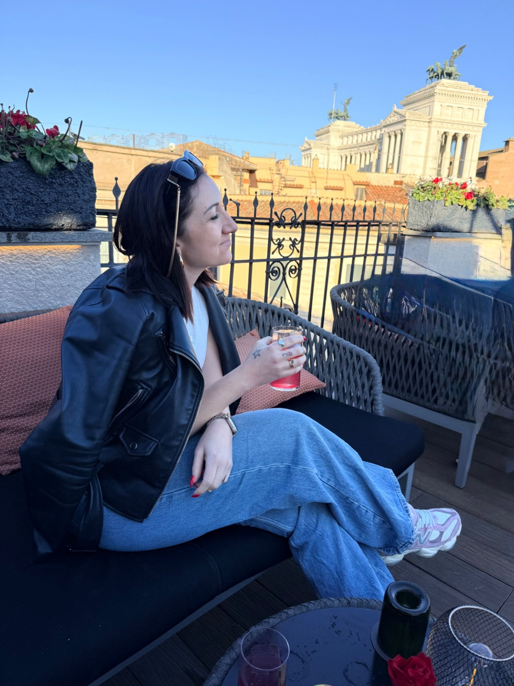
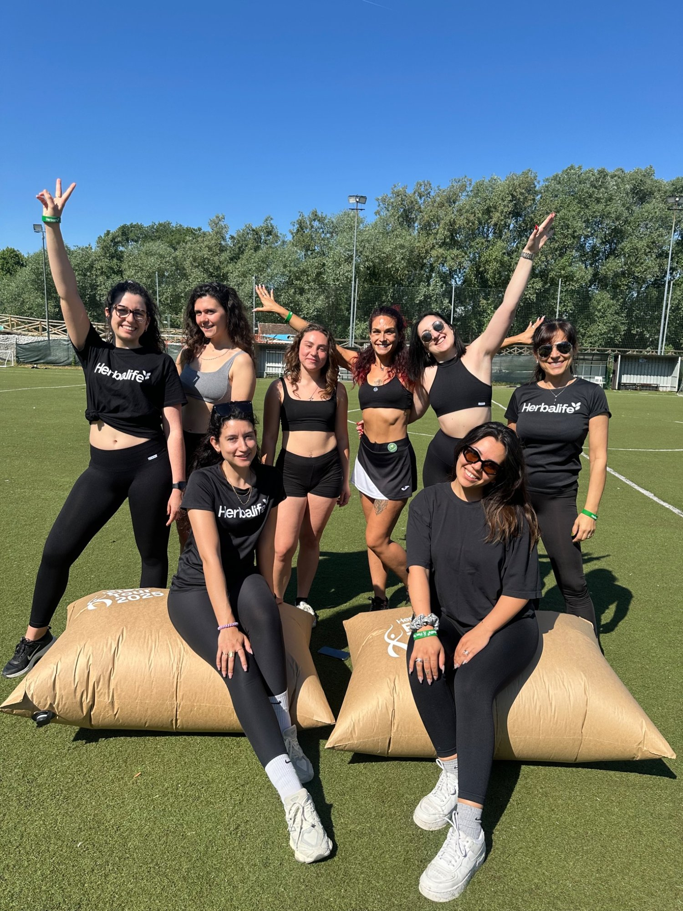

02 / Wellness
GLOW
Il tuo benessere, le tue abitudini, il tuo modo di prenderti cura di te.
Inizia da teNon devi avere già tutte le risposte. Puoi iniziare da te, dal tuo benessere o dal desiderio di costruire qualcosa di tuo.

Dieci anni fa lavoravo di notte come allestitrice in un supermercato. Avevo uno stipendio, una routine e la sensazione che la vita che desideravo fosse sempre un passo più in là.
Ho iniziato a prendermi cura di me e, parallelamente al lavoro, a conoscere un progetto che mi ha insegnato a comunicare, organizzarmi e credere nelle mie capacità. Dopo anni di costruzione, è diventato la mia unica attività.
Non è stata una scorciatoia. È stato un percorso fatto di scelte, impegno, errori e crescita. Oggi voglio creare uno spazio in cui altre donne possano iniziare il proprio.
Il tuo benessere, le tue abitudini, il tuo modo di prenderti cura di te.
Inizia da teUn'attività indipendente da conoscere e, se lo desideri, costruire con supporto e formazione.
Scopri il progettoUna community di donne che si valorizzano, condividono esperienze e si sostengono. Ognuna con i propri obiettivi, ognuna con la propria storia.
